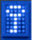

Εργαλεία
 |
7-Zip
Το 7-Zip είναι ένα πρόγραμμα για δημιουργία και εξαγωγή αρχειοθετημένων και συμπιεσμένων αρχείων σε μια τεράστια ποικιλία μορφών. Το 7-Zip μπορεί να δημιουργήσει και να εξάγει τις ακόλουθες μορφές: 7zip, ZIP, CAB, RAR, ARJ, GZIP, BZIP2, TAR, CPIO, RPM και DEB αρχεία. Για τις στάνταρ μορφές ZIP και GZIP, το 7-Zip παρέχει μια αναλογία συμπίεσης που είναι 2-10% καλύτερη από αυτή που παρέχει το PKZip ή το WinZip και η εγγενής μορφή 7zip μπορεί να παρέχει 45% μείωση του αρχικού αρχείου από τη κοινή μορφή Zip.
|
|
Clamwin
Το Clamwin είναι ένα ισχυρό πρόγραμμα antivirus με χαρακτηριστικά όπως υψηλή αναλογία εύρεσης ιών και spyware, προγραμματισμό σάρωσης και αυτόματη λήψη της τακτικά ενημερωμένης βάσης δεδομένων ιών.
|
|  |
TrueCrypt
Το TrueCrypt είναι ένα ισχυρό λογισμικό κρυπτογράφησης για τα προσωπικά σας δεδομένα. Λειτουργεί με τη δημιουργία ενός εικονικού σκληρού δίσκου μέσα σε ένα αρχείο. Μετά τη προσάρτηση του αρχείου ο υπολογιστής σας το μεταχειρίζεται ως πραγματικό σκληρό δίσκο. Μπορείτε να επιλέξετε να κρυπτογραφήσετε έναν ολόκληρο σκληρό δίσκο, ορισμένους φακέλους ή αφαιρούμενα μέσα όπως USB flash.
|
|
Workrave
Το Workrave είναι ένα πρόγραμμα που βοηθά στην αποκατάσταση και την πρόληψη του Συνδρόμου Επαναλαμβανόμενης Καταπόνησης (RSI - Repetitive Strain Injury). Το πρόγραμμα σας προειδοποιεί συχνά για να κάνετε μικρές διακοπές και για να περιορίσετε το συνολικό χρόνο που εργάζεστε σε ένα καθημερινό όριο, που είναι πλήρως προσαρμόσιμο στην ανάγκη του κάθε χρήστη. Όταν είναι ώρα για διάλειμμα, το Workrave παρουσιάζει εικόνες με το είδος των ασκήσεων που θα σας κρατήσουν εύκαμπτους και υγιείς. Θα σας βοηθήσει να απασχολείστε αποτελεσματικότερα και να βελτιώσετε το γενικό επίπεδο άνεσης όσο θα εργάζεστε.
|
|
InfraRecorder
Το InfraRecorder είναι μια δωρεάν/ελεύθερη λύση για εγγραφή CD/DVD σε Microsoft Windows. Προσφέρει μια ευρεία γκάμα δυνατών χαρακτηριστικών μέσα από ένα εύχρηστο και ολοκληρωμένο περιβάλλον.
|
|
Wammu
Το Wammu είναι ένα πρόγραμμα για τη διαχείριση των δεδομένων στο κινητό σας, όπως τις επαφές, το ημερολόγιο ή τα μηνύματα. Είναι χτισμένο στην βιβλιοθήκη Gammu, η οποία μπορεί να συνεργαστεί με διαφορετικά κινητά τηλέφωνα από διάφορους προμηθευτές (συμπεριλαμβανομένων των Nokia, Sony-Ericsson, Motorola, Samsung, Siemens, Huawei και άλλοι). |
Έκδοση - 1.2.0 | Ένωση Ελλήνων Χρηστών και Φίλων ΕΛ/ΛΑΚ (GreekLUG)
|